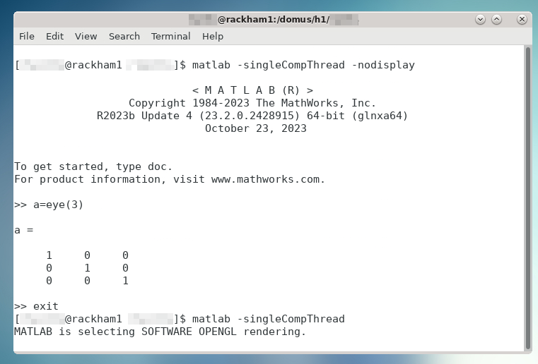
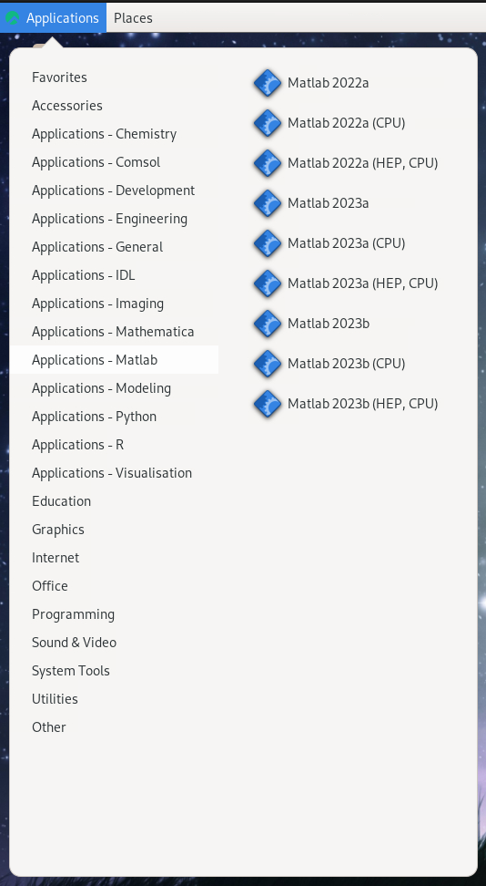

Load and Run MATLAB
- Different recommended procedures for each HPC center:
UPPMAX, NSC, and HPC2N: use module system to load at command line
LUNARC: recommended to use Desktop On-Demand menu, but interactive and non-interactive command lines available
PDC: recommended to load at command line; can run interactively on a compute node with X-forwarding and salloc. ThinLinc access is restricted to 30 users for the whole Dardel cluster.
Most HPC centres in Sweden use the same or a similar module system for their software. The difference lies in which modules are installed and their versions/naming. The general examples below will be similar for all HPC centres in Sweden, with some variation in naming and available versions.
Objectives
Be able to load MATLAB
Be able to run MATLAB scripts and start the MATLAB graphical user interface (GUI)
Short cheat sheet
See which modules exists:
module spiderorml spiderFind module versions for a particular software:
module spider <software>Modules depending only on what is currently loaded:
module availorml avSee which modules are currently loaded:
module listormlLoad a module:
module load <module>/<version>orml <module>/<version>Unload a module:
module unload <module>/<version>orml -<module>/<version>More information about a module:
module show <module>/<version>orml show <module>/<version>Unload all modules except the ‘sticky’ modules:
module purgeorml purgeSave currently loaded modules:
module save <collection_name>(especially useful on Dardel)(Re)load modules from saved collection:
module restore <collection_name>
Warning
Note that the module systems at UPPMAX, HPC2N, LUNARC, NSC, and PDC are slightly different.
While all modules at UPPMAX and NSC not directly related to bio-informatics are shown by
ml avail, modules at the other centers may be hidden until one has loaded a prerequisite like the compilerGCC.Thus, you need to use
module spiderto see all modules at HPC2N, LUNARC, and PDC, andml availfor those available to load given your currently loaded prerequisites.There is no system MATLAB that comes preloaded like Python, but ml load matlab with no release date will load the latest release, which is periodically updated. For reproducibility reasons, you should be sure to load the same release throughout a given project.
New sessions on Dardel (PDC) start with 13 modules loaded, but only one of them is sticky (i.e. will remain loaded after a
ml purgecommand). We highly recommended that you save the preloaded modules as a collection so that you can quickly restore the default modules if you accidentally useml purgeinstead ofml unload <module>.
Check for MATLAB versions
Type-Along
Checking for MATLAB versions
Check all available MATLAB versions with:
$ module avail matlab
Check all available MATLAB versions with:
$ module spider MATLAB
Note that it is case-sensitive and must be in ALL-CAPS. There will be results if you type matlab, but they won’t be the ones you want.
To see how to load a specific version of MATLAB, including the prerequisites, do
$ module spider MATLAB/<version>
Example for MATLAB 2023a.Update4
$ module spider MATLAB/2023a.Update4
See all available MATLAB versions at the command line with:
$ ml spider matlab
Or, if on Desktop On-Demand, select Applications in the top left corner and hover over Applications - Matlab (see also GUI section below).
See all available MATLAB versions at the command line with:
$ ml spider matlab
On Dardel, all MATLAB versions have a prerequisite that needs to be loaded (it will called something like PDC/xx.xx or PDCOLD/xx.xx). To view the prerequisites for a specific version of MATLAB, do
$ module spider matlab/<version>
Note
In this course we will mainly use MATLAB R2023b.
Output at UPPMAX (Rackham) as of 16 October 2024
$ ml avail matlab ---------------------------- /sw/mf/rackham/applications ---------------------------- matlab/R2014a matlab/R2018a matlab/R2022b matlab/7.10 matlab/R2015a matlab/R2018b matlab/R2023a matlab/7.13 matlab/R2015b matlab/R2019a matlab/R2023b (L,D) matlab/8.0 matlab/R2016a matlab/R2020b matlab/7.4 matlab/8.1 matlab/R2017a matlab/R2022a matlab/7.8 Where: L: Module is loaded D: Default Module Use "module spider" to find all possible modules and extensions. Use "module keyword key1 key2 ..." to search for all possible modules matching any of the "keys".
Output at HPC2N (Kebnekaise) as of 26 Sep 2024
$ ml spider MATLAB ---------------------------------------------------------------------------- MATLAB: ---------------------------------------------------------------------------- Description: MATLAB is a high-level language and interactive environment that enables you to perform computationally intensive tasks faster than with traditional programming languages such as C, C++, and Fortran. Versions: MATLAB/2019b.Update2 MATLAB/2021a MATLAB/2021b MATLAB/2022b.Update3 MATLAB/2023a.Update4 Other possible modules matches: MATLAB-parallel-support ----------------------------------------------------------------------------
Output at LUNARC (Cosmos nodes) as of 27 Feb 2025
$ ml spider matlab ---------------------------------------------------------------------------- matlab: ---------------------------------------------------------------------------- Versions: matlab/2022a matlab/2023a matlab/2023b matlab/2024b ---------------------------------------------------------------------------- For detailed information about a specific "matlab" package (including how to load the modules) use the module's full name. Note that names that have a trailing (E) are extensions provided by other modules. For example: $ module spider matlab/2023b ----------------------------------------------------------------------------
Output at NSC (Tetralith) as of 27 Feb 2025
$ ml avail matlab --------------------- /software/sse2/tetralith_el9/modules --------------------- MATLAB/recommendation (D) MATLAB/2023b-bdist MATLAB/2023a-bdist MATLAB/2024a-hpc1-bdist Where: D: Default Module
Output at PDC (Dardel) as of 17 Mar 2025
:~> ml spider matlab Versions: matlab/r2020b matlab/r2021b matlab/r2022b matlab/r2023a matlab/r2024a-ps matlab/r2024a matlab/r2024b :~> ml spider matlab/r2024b matlab: matlab/r2024b You will need to load all module(s) on any one of the lines below before the "matlab/r2024b" module is available to load. PDC/23.12 Help: For more information, visit: https://www.mathworks.com
Load a MATLAB module
For reproducibility, we recommend ALWAYS loading a specific module instead of using the default version!
For this course, we recommend using MATLAB R2023x at UPPMAX (R2023b), NSC (2023b), and HPC2N (2023a.Update4), or R2024b at LUNARC (2024b). At PDC, we recommend r2024b for users affiliated with KTH or who have their own MathWorks accounts, or r2023b otherwise.
Type-Along
Loading a Matlab module at the command line, here R2023b
Go back and check which MATLAB modules were available. To load version 2023b, do:
$ module load matlab/R2023b
Note: all lowercase except the R. For short, you can also use:
$ ml matlab/R2023b
$ module load MATLAB/2023b
Note: all Uppercase except for the letter after the year. For short, you can also use:
$ ml MATLAB/2023b
Go back and check which MATLAB modules were available. To load version 2023b, do:
$ module load matlab/2023b
Note: all lowercase. For short, you can also use:
$ ml matlab/2023b
Go back and check which MATLAB modules were available. To load version 2023b, do:
$ module load MATLAB/2023b-bdist
Note: all Uppercase except for the letter after the year. For short, you can also use:
$ ml MATLAB/2023b
If you check with ml which version is loaded, you will see the -bdist suffix was added automatically. Versions without -bdist at the end only appear with ml spider matlab and they do not appear to be loadable.
Go back and check which MATLAB modules were available, and what their prerequisites are. To load version 2024b, do:
:~> module load PDC/23.12
:~> module load matlab/r2024b
Note: all lowercase including the r before the year.
For short, you can also use:
:~> ml PDC/23.12 matlab/r2024b
Start MATLAB at the Command Line
Most of the time, you will run either MATLAB live scripts (.mlx) or basic script or function files (.m). Live scripts can only be opened and worked on in the GUI, while basic function or script files can also be run from a batch script and/or at the command line. It is important to note that at the command line, function definition is typically not supported unless the function is short and anonymous; user-defined functions must generally be written up and saved to separate .m files.
The GUI is often the recommended interface where it is offered. The GUI provides ways to set up SLURM jobs through the Parallel Computing Toolbox, which will be discussed later. The resources required to run the GUI and those required to run a job submitted to SLURM are separate, so do not worry if the maximum allocation time for a MATLAB GUI session is much less than the limit for a SLURM job.
When starting MATLAB from the command line, the -singleCompThread flag is often required to prevent MATLAB from spawning as many processes as it thinks it needs up to the full capacity of a node. At most HPC centers, terminal instances launch MATLAB (either the GUI or command line) on a login node by default, so hogging a node can disrupt jobs and access for other users. Disrupting other users violates the NAISS user agreement, and HPC center staff reserve the right to kill disruptive tasks without warning.
Some HPC centers detect if you’ve started on a login node and set maxCompThreads to 1 automatically, but when in doubt, use -singleCompThread to be safe. Setting -singleCompThread does not prevent MATLAB from sending parallelized and/or multi-threaded jobs to SLURM or the MATLAB Distributed Computing Server (MDCS).
Type-Along
Starting MATLAB at the command line, here R2023b
Once you’ve loaded your preferred version of MATLAB, type:
$ matlab -nodisplay
to start MATLAB in the terminal. The maximum number of computational threads will be set to 1 automatically if you are on a log-in node.
The GUI can be started in a ThinLinc session by going to “Application” → “HPC2N Applications” → “Applications” → “Matlab <version>” and clicking the desired version.
To start MATLAB in the terminal, load matlab/2023b or your preferred version, and then type:
$ matlab -singleCompThread -nodisplay
to start MATLAB in the terminal. The -singleCompThread is important to prevent MATLAB from hogging a whole node, and the -nodisplay flag prevents the GUI from launching.
It is recommended that GUI be started in ThinLinc at the LUNARC HPC Desktop On-Demand.
To start MATLAB in the terminal, you must first choose the correct terminal. There are several: three in Applications → Applications - General, which can safely launch either the MATLAB GUI or MATLAB command line on a compute node, and one in Applications → Favorites → Terminal, which runs on a login node and should be avoided. Starting any of the three in Applications - General will open the GfxLauncher and prompt you for your account and resource selections. Even users who have been awarded GPU time are encouraged to use the CPU-only terminal whenever possible, as they are abundant and less resource intensive.
Once you’ve opened a terminal session and loaded your preferred version type:
$ matlab -singleCompThread -nodisplay
Starting a MATLAB session on Dardel looks different depending on whether or not you are affiliated KTH or have been added to the MATLAB user group by PDC support (e.g. as part of this course, if you signed up in time). If you are a KTH affiliate or another PDC-approved academic user, you are covered by KTH’s university license. Otherwise, you will need to have a MathWorks account and be logged into it in your browser before getting started, because MATLAB on Dardel will ask you provide the email associated with your MathWorks account and a one-time password (OTP) sent to that account online (which you will have to copy from your browser).
Either way, you will first need to load the corresponding PDC, PDCOLD, or PDCTEST prerequisite. The current default is PDC/23.12, and that makes available any MATLAB version from 2024. The only version that reliably works for non-KTH users without asking for credentials is r2024-ps.
If you, for example, wanted to start matlab/r2024a-ps in the terminal, the sequence would look as follows:
:~> ml PDC/23.12 matlab/r2024a-ps
:~> matlab -singleCompThread -nosplash -nodesktop -nodisplay
If you are an academic user who has been vetted by PDC staff, the above should be enough to eventually take you to the MATLAB command prompt. Otherwise, you will see the following:
Please enter your MathWorks Account email address and press Enter: <your.email@your.institute.se>
You need a one-time password to sign in. To get a one-time password, follow these steps:
1. Go to https://www.mathworks.com/mwa/otp
2. Enter your MathWorks Account email address.
3. Copy the generated one-time password.
4. Return here and enter the password.
Enter the one-time password:
If you are a student or staff member at KTH and you see these credential requests, that means PDC support did not receive your request for MATLAB access.
PDC users also have the option to go through ThinLinc and open MATLAB from the On-Demand Applications menu, but this is not recommended as only 30 users are allowed to interface with Dardel via ThinLinc at any one time.
Starting the MATLAB GUI
Running the MATLAB GUI requires that users be logged into a ThinLinc session. See https://uppmax.github.io/R-matlab-julia-HPC/common/login.html#log-in
For HPC2N, once logged into the remote desktop, the procedure for starting the MATLAB GUI is the same as what was shown above to start it at the command line, except that the -nodisplay flag is omitted (as are -nodesktop -nosplash if applicable). You should still include -singleCompThread!
It is possible to start the MATLAB GUI on a compute node on Kebnekaise (HPC2N). The procedure uses salloc and srun to achieve what other facilities often do with the interactive command (edit time, resources, project ID, and MATLAB version as needed):
$ salloc -N 1 -t 00:30:00 -A hpc2n20YY-XXX $ module load MATLAB/2023b $ srun matlab
For UPPMAX users, once logged into the remote desktop, the procedure for starting the MATLAB GUI is the same as what was shown above to start it at the command line, except that the -nodisplay flag is omitted (as are -nodesktop -nosplash if applicable). You should still include -singleCompThread!
{kind=link}

It is also possible to start the MATLAB GUI on the login node, but even if you are already logged into Rackham, you must use Snowy for any interactive work. Fortunately, the interactive command takes care of this for you without requiring SSH, as long as you specify -M snowy. A MATLAB GUI session can be run with the following commands (again, edit time, resources, project ID, and MATLAB version as needed):
$ interactive -M snowy -n 4 -t 00:30:00 -A uppmax20YY-X-XXX $ module load matlab/R2023b $ matlab
In the above example, -n 4 means the job will run on 4 cores. Snowy nodes have 16 cores. The default partition, core, is for jobs requiring up to 15 cores, and they cannot be exclusive. If you need a full node, or more cores than one node contains, you should change the partition with -p node. Please refer to this link for allowed combinations of interactive parameters.
The best way to start the MATLAB GUI on Tetralith depends on how intensively you plan to use the GUI. Most of the time, it is recommended to use the interactive command first to get an allocation on a compute node. The commands you will need to enter look like the following (change the MATLAB version and interactive job specifications as needed):
$ interactive -N 1 --exclusive -t 4:00:00 $ module load MATLAB/2024a-hpc1-bdist $ matlab -softwareopengl
For short (<<1 hour) tasks requiring few resources, once you’ve loaded your preferred version of MATLAB, you can use the following command to start MATLAB on a login node:
$ vglrun matlab -nosoftwareopengl
You do not need to include -singleCompThread because maxNumCompThreads will be set to 1 automatically to account for starting on a login node.
The LUNARC HPC Desktop, available via ThinLinc, uses Desktop On-Demand and GfxLauncher to run certain interactive apps without going through a terminal interface. Click the Applications menu at the top left, hover the cursor over Applications-Matlab to see the versions available, and click your preferred version. That will open a GfxLauncher popup where you can set the resources needed to run the MATLAB GUI (note that batch jobs submitted from within the GUI are _not_ bound by the same settings as the GUI).
There are 3 versions per MATLAB release in the Apps menu—regular, (CPU), and (HEP,CPU)—and your resource choices in the GfxLauncher partly depend on which of those you select.
{kind=link}

The (HEP,CPU) nodes are private. The regular versions run on Intel 32-core nodes because they have built-in GPU partitions, but you may choose other nodes. If you don’t plan to do any intensive graphical work inside the GUI, you can choose the (CPU) version of your preferred release to access an AMD 48-core node, which also allows you to run for up to 7 days (168:00:00) instead of the usual 2-day limit.
There are 2 ways to run MATLAB interactively on Dardel: via SSH with X-forwarding (recommended), or via Desktop On-Demand in a ThinLinc window. ThinLinc access to Dardel is limited to 30 users total, and even if you do get through, interactive jobs are likely to be stuck in queues for a long time.
SSH with X-forwarding. When you first ssh into Dardel, you will need to have added the -X flag between ssh and your username. Once you are logged in, you need to book a compute node with salloc, and then SSH (again with the -X flag) into whichever node you are assigned to by salloc. The salloc step and its output will look something like this:
:~> salloc -N 1 -t 00:30:00 -A naiss2025-22-262 -p main
if you request a full node, or
:~> salloc -c 16 -t 00:30:00 -A naiss2025-22-262 -p shared
if you request, for example, 16 cores on a shared node. Adjust the time, resources, and account number as needed. salloc will then print a handful of lines about the progress of allocating and queuing your job. The last line of output, something like salloc: Nodes nid00xxxx are ready for job, will contain the ID of the node you booked. Copy that, and then run the following lines (after the :~> prompt; adjust the node ID as needed):
<user>@login1:~> ssh -X nid001756 <user>@nid001756:~> ml PDC/23.12 <user>@nid001756:~> ml matlab/r2024a-ps <user>@nid001756:~> matlab
The GUI will take a few minutes to load.
If you are lucky enough to get into Dardel via ThinLinc, the process looks very similar to LUNARC because Dardel’s Desktop On-Demand apps also go through GfxLauncher, except that the MATLAB versions in the app menu are not separated by the types of nodes to run on. You choose the partition in the resources section of the GfxLauncher.
Exercises
Try them yourself!
Load MATLAB in the terminal or GUI and do a few simple commands at the command line. For example,
$ ml matlab/2023b $ matlab -singleCompThread -nodisplay < M A T L A B (R) > Copyright 1984-2023 The MathWorks, Inc. R2023b Update 7 (23.2.0.2515942) 64-bit (glnxa64) January 30, 2024 To get started, type doc. For product information, visit www.mathworks.com. >> a = 5; >> b = eye(2); >> c = a+b c = 6 5 5 6
Copy the example function below to a file called add2.m in your working directory or the MATLAB directory that the configuration step created for you in your Documents folder. Then run it at the MATLAB command line.
function result = add2(x,y)
result = x+y
disp("The sum of "+x+" and "+y+" is "+result)
end
Solution
>> add2(5,8)
result =
13
The sum of 5 and 8 is 13
>>
Exit the MATLAB command line with quit or exit (this can take a few seconds).
>> exit
Keypoints
You can start MATLAB either in a GUI or, with the
-nodisplayflag, run it in the terminal.If you start either interface from the terminal, you must first load the correct module(s).
For interactive work, you will usually have to reserve time on a compute node.
If you take the risk of starting on a login node, use the
-singleCompThreadflag in the starting command to avoid hogging the node, unless you are sure that your cluster sets that constraint on the login node automatically.